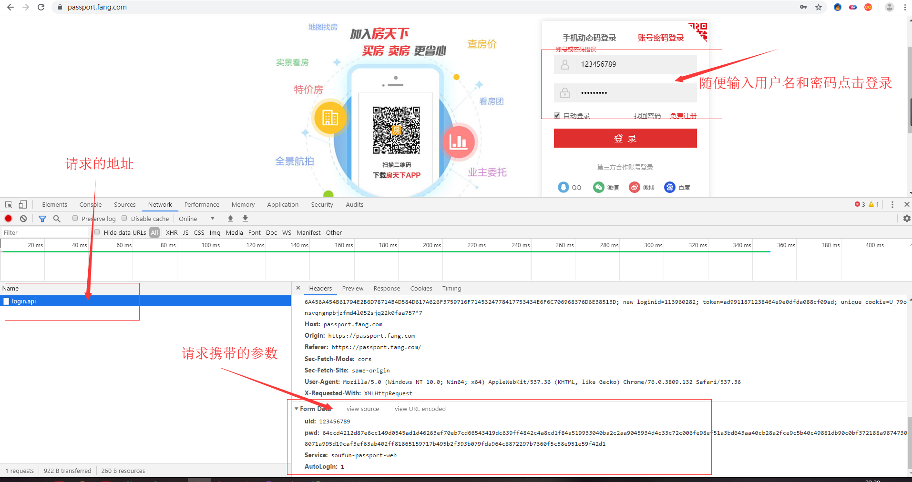
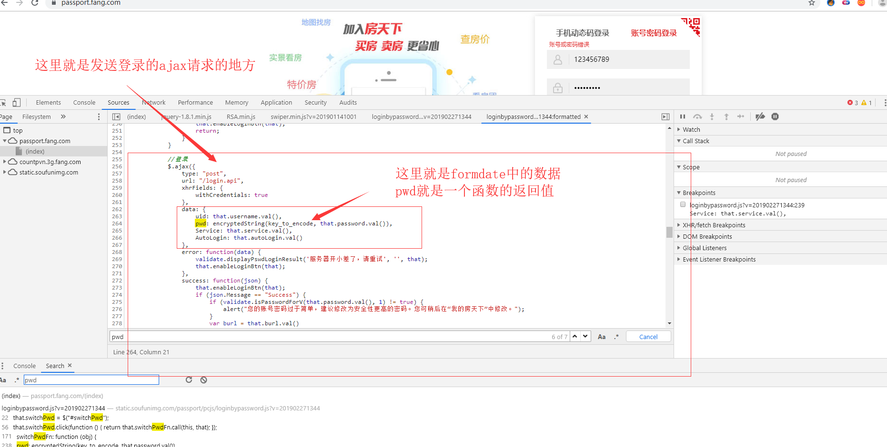
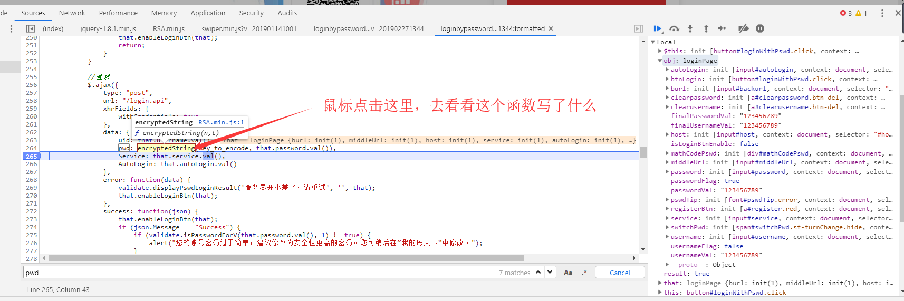
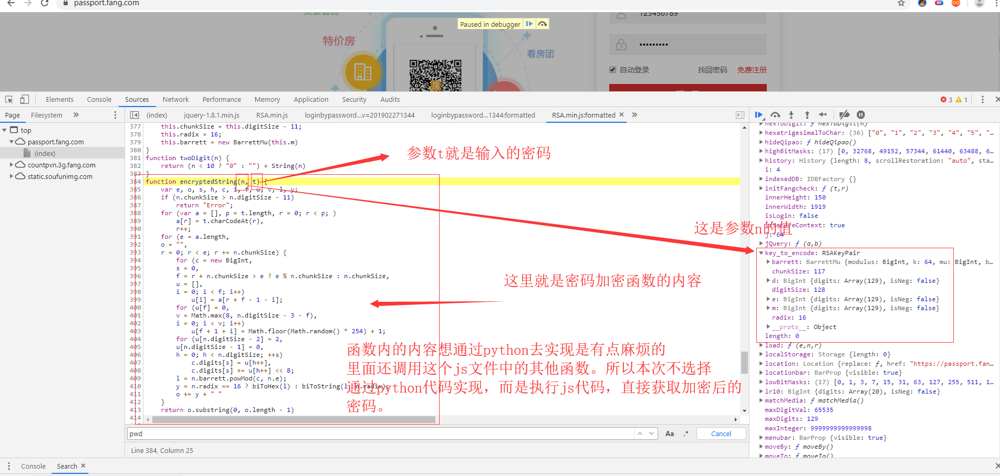
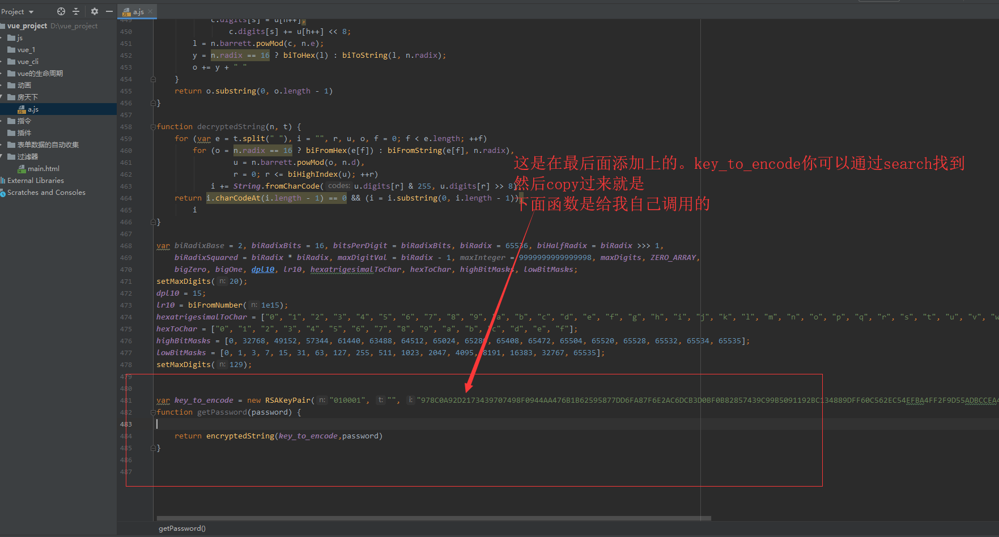

本次爬取的网址为:https://passport.fang.com
一、分析请求
输入用户名和密码，点击登录按钮

请求的参数为:
uid: 123456789
pwd: 64ccd4212d87e6cc149d0545ad1d46263ef70eb7cd66543419dc639ff4842c4a8cd1f84a519933040ba2c2aa9045934d4c33c72c006fe98ef51a3bd643aa40cb28a2fce9c5b40c49881db90c0bf372188a98747308071a995d19caf3ef63ab402ff81865159717b495b2f393b079fda964c8872297b7360f5c58e951e59f42d1
Service: soufun-passport-web
AutoLogin: 1uid就是输入的用户名，pwd是将密码加密后的数据。我们只要找出密码的加密方式就可以模拟登录了。
二、密码加密方式破解
这次我们以pwd作为关键字，进行搜索

找到加密位置之后，我们打上断点，重新点击登录

找到密码加密的函数，查看内容

这里呢使用execjs这个库去解决，实现起来非常简单。我们将js文件内容全部复制一份到我们本地的js文件。

至于execjs怎么使用，你可以看我写的一篇博客，非常简单。前提你的安装execjs和node环境。最后我们通过execjs调用函数getPassword就可以拿到加密的字符串了。
import execjs
import requests
class FangTX:
def __init__(self):
self.session = requests.Session()
self.headers = {
"user-agent": "Mozilla/5.0 (Windows NT 10.0; Win64; x64) AppleWebKit/537.36 (KHTML, like Gecko) Chrome/76.0.3809.132 Safari/537.36",
"Origin": "https://passport.fang.com",
"Referer": "https://passport.fang.com/"
}
def login(self, username, password, auto_login=1):
'''
:param username: 账户名
:param password: 密码
:param auto_login: 是否自动登录 0为否 1为是
:return:
'''
api = "https://passport.fang.com/login.api"
password = self._get_encrypt_password(password)
headers = self.headers.copy()
data = {
"uid": username,
"pwd": password,
"Service": "soufun-passport-web",
"AutoLogin": auto_login
}
result = self.session.post(url=api, data=data, headers=headers).json()
print(result)
def _get_encrypt_password(self, password):
if not hasattr(self, "ctx"):
self._get_ctx()
return self.ctx.call("getPassword", password)
def _get_ctx(self):
# ./a.js就是复制下来的js文件
js_code = ""
with open("./a.js", "r", encoding="utf-8") as f:
for line in f:
js_code += line
self.ctx = execjs.compile(js_code)
def test(self):
# self.login("18716758177", "123456")
pass
if __name__ == '__main__':
ftx = FangTX()
ftx.test()